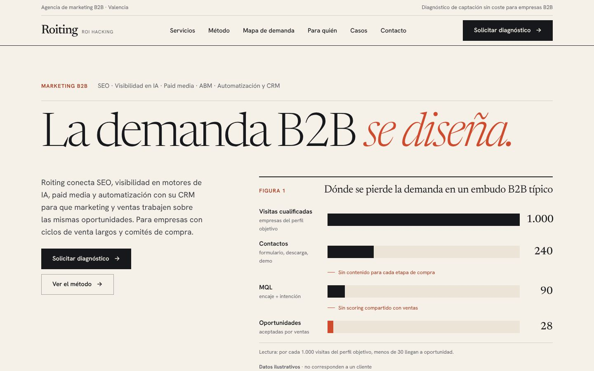

A · Editorial ejecutivo
Un informe de consultoría: titulares serif, notas al margen y gráficos numerados como «Figuras» con pie y fuente.
- Ventaja
- La más clara para dirección general y la más sencilla de reproducir en Elementor (texto, reglas y SVG).
- Riesgo
- Puede parecer conservadora para un público tecnológico.